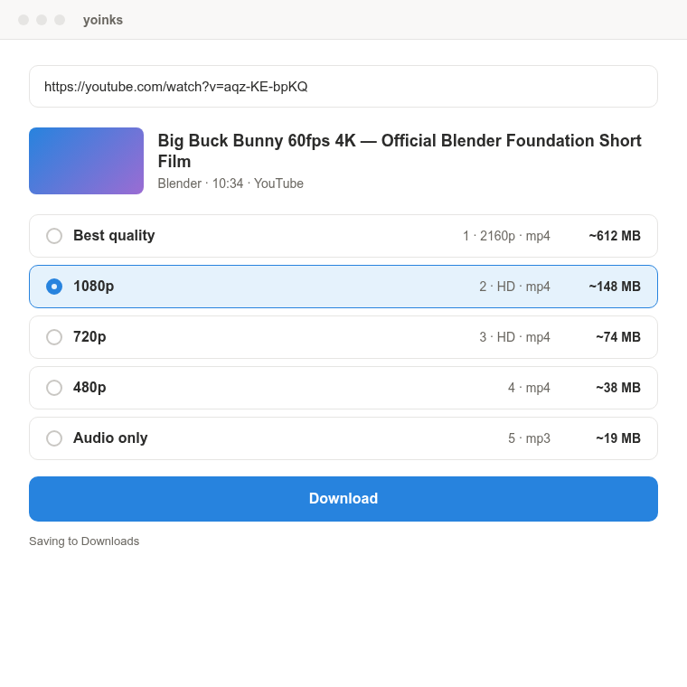

4K
Every quality, with sizes
Pick 4K, 1440p, 1080p, 720p or lower, and see the estimated file size before you download.
Free · Open source · No ads
A free desktop video downloader for YouTube, TikTok, Instagram Reels, X/Twitter, Facebook and 1,800+ sites. Save MP4 up to 4K, or just the MP3.

No popups, no fake download buttons, no sign-up. Just your video.
Pick 4K, 1440p, 1080p, 720p or lower, and see the estimated file size before you download.
Choose Audio only to save a high-quality MP3 from any video or song.
Copy a link anywhere and yoinks offers to download it. One click.
See megabytes downloaded, speed and time left in real time, and cancel any time.
The download engine updates itself, so it keeps working when sites change.
Everything runs on your computer. No servers, no tracking, no account.
From YouTube, TikTok, Instagram, X or any supported site.
Or click the copied-link suggestion. Pick a resolution or MP3.
Your file lands in Downloads. Open it or show it in its folder.
Free for Windows, macOS and Linux.
Apple Silicon (M1–M4)
Download .dmgIf macOS says it's “damaged”, run xattr -cr /Applications/yoinks.app
On Windows, if SmartScreen appears, click More info → Run anyway. The app isn't code-signed yet.
Yes. It's free and open source under the MIT license. There are no ads, no premium tier and no account.
Yes. yoinks lists every resolution a video offers, up to 4K (2160p), with an estimated file size for each.
Yes. Choose Audio only to save a high-quality MP3.
Yes, plus Facebook, Reddit, Threads, Vimeo and 1,800+ other sites supported by yt-dlp.
No. Everything is bundled. Just install and run.
Restart yoinks. Its download engine updates itself on launch. If it's still broken, open an issue.